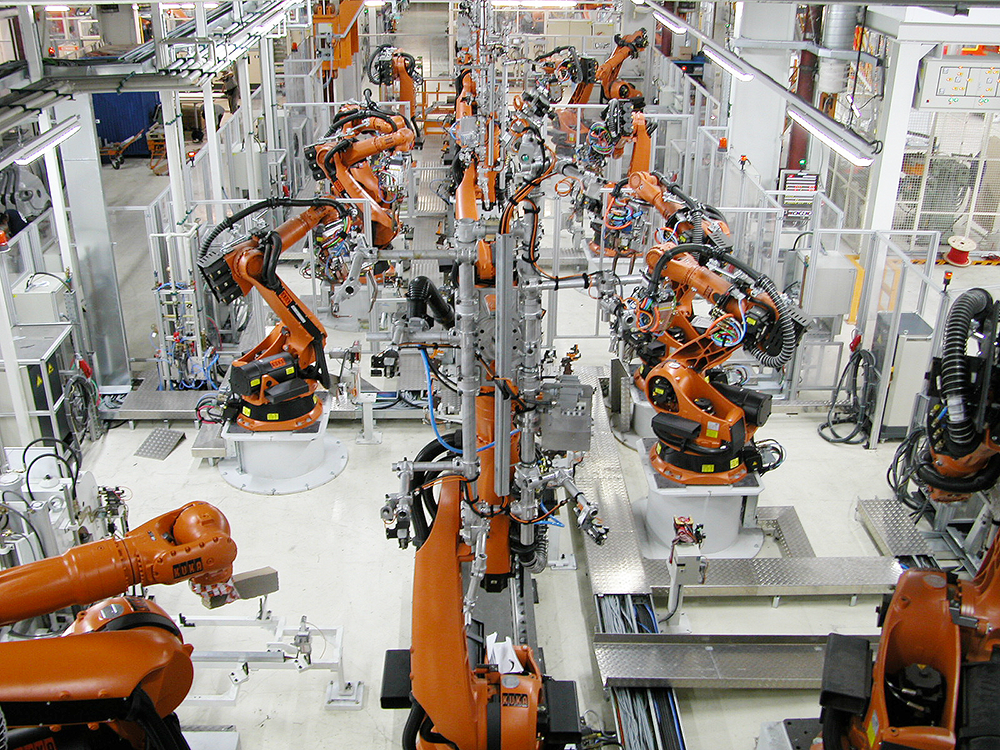

1997'den bu yana endüstriyel kaynak teknolojilerinde güvenilir çözüm ortağınız.

Unis Makina, 1997 yılında Bursa'da kurulmuş olup, direnç kaynak makinaları, kaynak kontrol üniteleri ve özel makina imalatı alanlarında faaliyet göstermektedir.
İspanyol Serra firmasının Türkiye'deki çözüm ortağı olarak, uluslararası standartlarda kaynak ekipmanları, teknik destek ve mühendislik hizmetleri sunuyoruz. Serra'nın 90 yılı aşkın deneyimi ve Unis Makina'nın yerel uzmanlığı bir araya gelerek, Türkiye ve bölge pazarında güçlü bir sinerji oluşturmaktadır.
Kurulduğumuz günden itibaren en önemli ilkemiz kaliteli ürün ve kaliteli hizmet olmuştur.
Serra standartlarında üretim kalitesi ve müşterilerimize tam güvenilirlik sağlıyoruz.
Yerel varlığımız sayesinde teknik destek ve servis ihtiyaçlarına hızlı yanıt veriyoruz.
Özel projelere uygun, müşteri odaklı mühendislik çözümleri geliştiriyoruz.
Serra ortaklığıyla global standartlarda ekipman ve teknoloji sunuyoruz.
30'dan fazla uzman mühendis ve teknisyenden oluşan tecrübeli kadromuz.
Tasarımdan devreye almaya kadar komple kaynak ve otomasyon çözümleri.
Unis Makina, Bursa'da direnç kaynak makinaları imalatı amacıyla kuruldu.
Türkiye'nin önde gelen otomotiv OEM ve Tier 1 tedarikçilerine hizmet vermeye başladı.
İspanyol Serra firması ile stratejik çözüm ortaklığı kurularak uluslararası standartlara geçiş sağlandı.
30+ uzman kadro, 2.000 m² üretim alanı ve 3 ülkeye ihracat ile büyümeye devam ediyoruz.
1930'dan bu yana endüstriyel kaynak teknolojilerinde dünya lideri olan Serra Soldadura'nın Türkiye'deki resmi çözüm ortağıyız. Serra'nın 90+ yıllık deneyimi, ileri teknolojisi ve geniş ürün yelpazesini, Unis Makina'nın yerel uzmanlığı ve hızlı servis ağıyla birleştiriyoruz.
Bu ortaklık sayesinde müşterilerimize, Serra'nın Barselona merkezli üretim tesislerinden en güncel kaynak teknolojilerini, yerel teknik destek ve satış sonrası hizmetle birlikte sunabiliyoruz.
